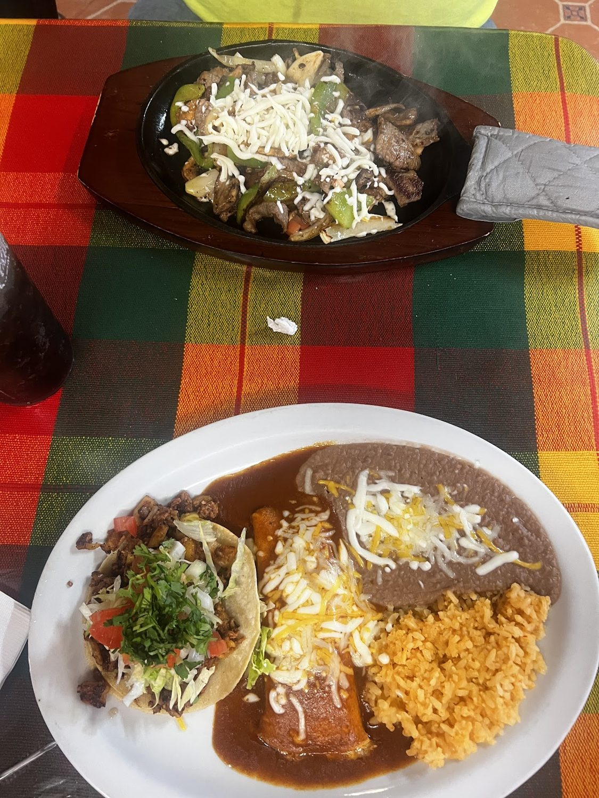

What to order at Janitzio: a Caldwell first timer's guide

Two hosts, about a minute and a half, on the story and what to order.
If you have driven down South Kimball Avenue in Caldwell, you have passed it: a warm orange building with a gold Janitzio sign and a little note that reads "desde 2006." It is easy to miss, and that is exactly why regulars love to say the same thing in their reviews: do not be intimidated by the outside.
Step in and it is a different world. Murals on the walls, colorful tablecloths, a tidy dining room, and the smell of a kitchen that has been run by the same family for more than twenty years. Janitzio is named for a small island in Michoacan, and the menu is the traditional cooking that comes with it. Here is how to order like you have been coming for years.
Start with the salsa
Ask anyone in the valley about Janitzio and the salsa comes up first. People genuinely drive across the Treasure Valley for it. Get the chips and salsa going the moment you sit down, and let it set the tone for everything that follows.
"Stopped in for a late lunch and had the quesataco plate. Delicious. Friendly service and the salsa is something special."The chile rellenos are the test
There is an old habit among Mexican food lovers: you judge a kitchen by its chile rellenos and its tacos. Janitzio passes both. The rellenos are a regular highlight, the kind of homemade plate that tells you the recipe has not changed in twenty years. If it is your first visit and you want to know whether a place is the real thing, this is the order.
Bandera enchiladas and the full plates
For something that looks as good as it tastes, the bandera enchiladas come in the red, green and white of the flag. Pair them with rice and beans for a proper sit down meal. This is comfort food done the slow way, and it is why families keep a standing table here.
"This is the best traditional Mexican restaurant in the area. Lots of options from burritos, to enchiladas, fajitas, tacos, pozole, mole sauce, and lots of seafood options. The family that runs and owns the restaurant have been in business for over 20 years and they are SO nice. Great and friendly service, highly recommend visiting!"Do not skip the fajitas, or the salad
The fajitas arrive sizzling, steak, chicken or mixed, with warm tortillas to build your own. And here is a tip hiding in the reviews: the fajita Caesar salad has a quiet following. It sounds simple, and then you taste it and understand why people mention it by name.
The surprise: seafood in Caldwell
Most folks do not expect a full lineup of mariscos this far from the coast, but Janitzio has one, and it is one of the things regulars rave about. Ask your server what is good that day. The same goes for the slow cooked side of the menu, pozole, caldos and a rich house mole that take time and taste like home.
How to go
Janitzio is open Monday through Friday, 11am to 8pm early in the week and until 9pm on Thursday and Friday, closed on the weekend. You can dine in, call ahead for takeout, or get it delivered. For a family gathering or the office, place a larger order, just call ahead so the kitchen can plan.
"Really cute and clean inside and great service! I loved the fajita Caesar salad! My husband liked his burrito! You should try this place out! Do not be intimidated by the outside."So next time you are in Caldwell and you want the real thing, follow the gold sign to 313 South Kimball. Tell them you heard the salsa is the best in the valley. They already know.
Come taste it for yourself.
313 S Kimball Ave, Caldwell. Dine in, takeout or delivery.